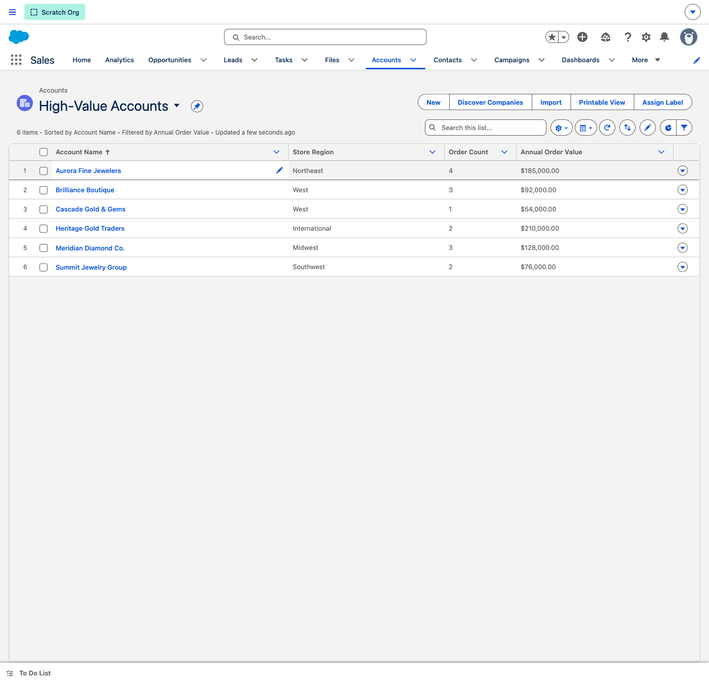
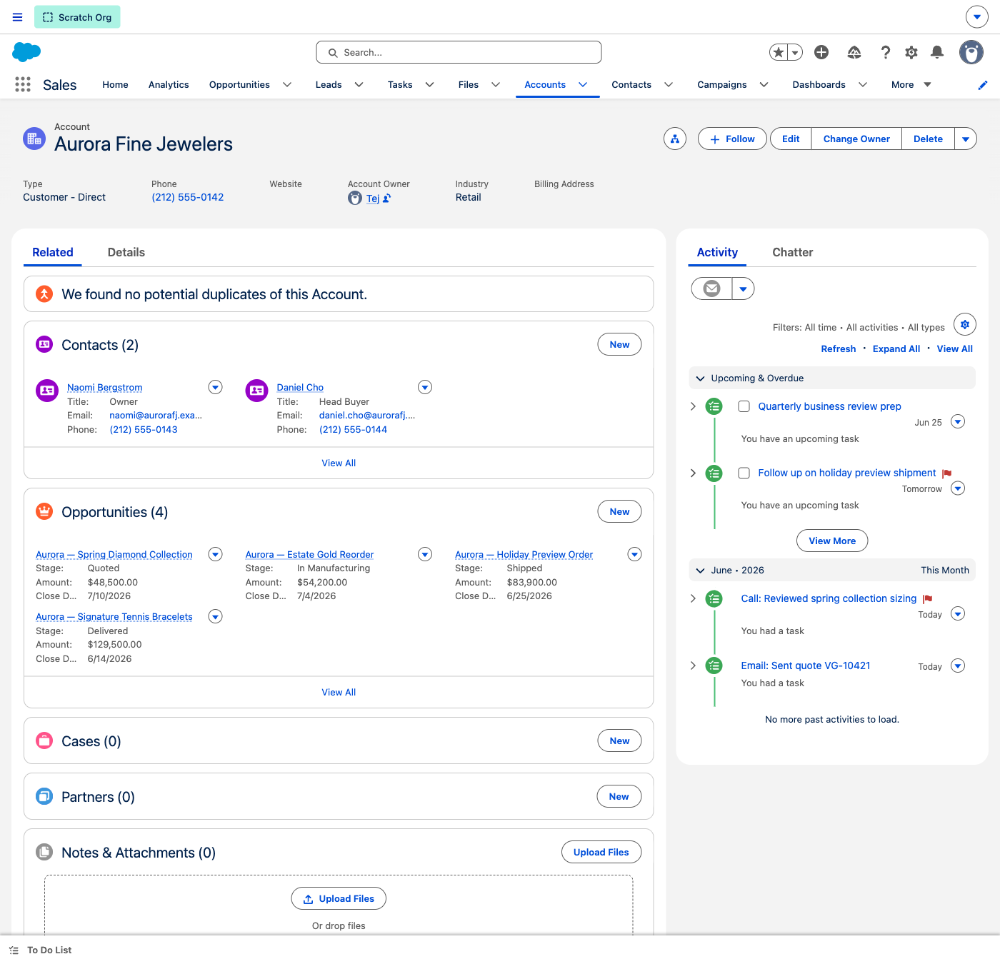
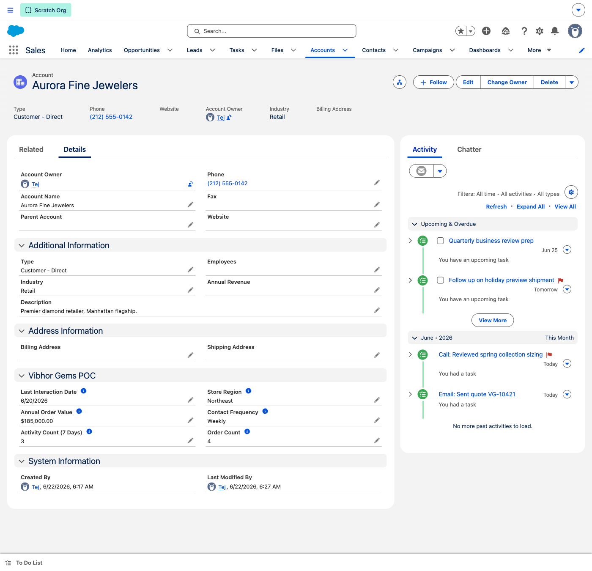
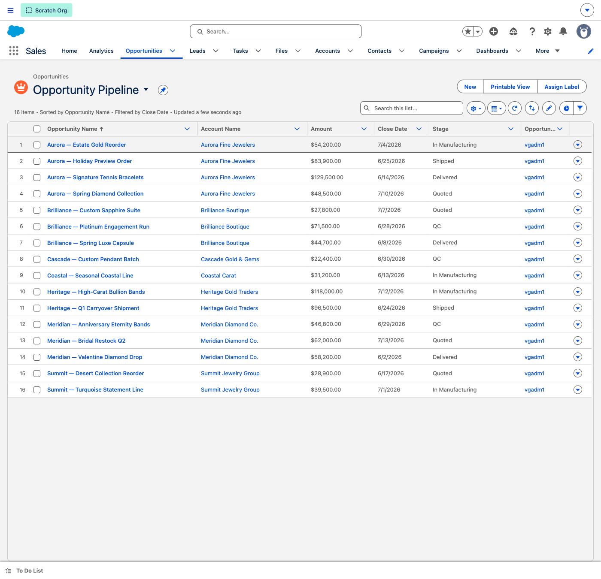
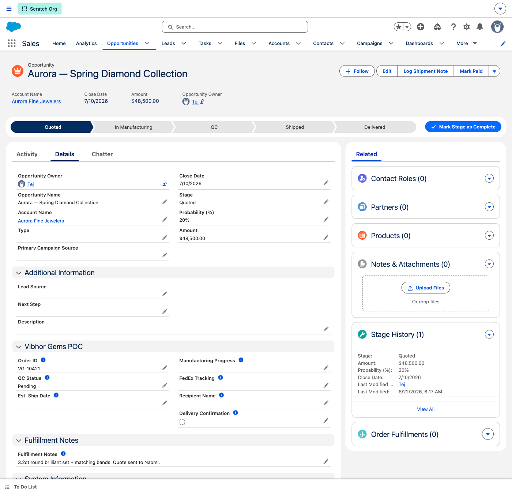
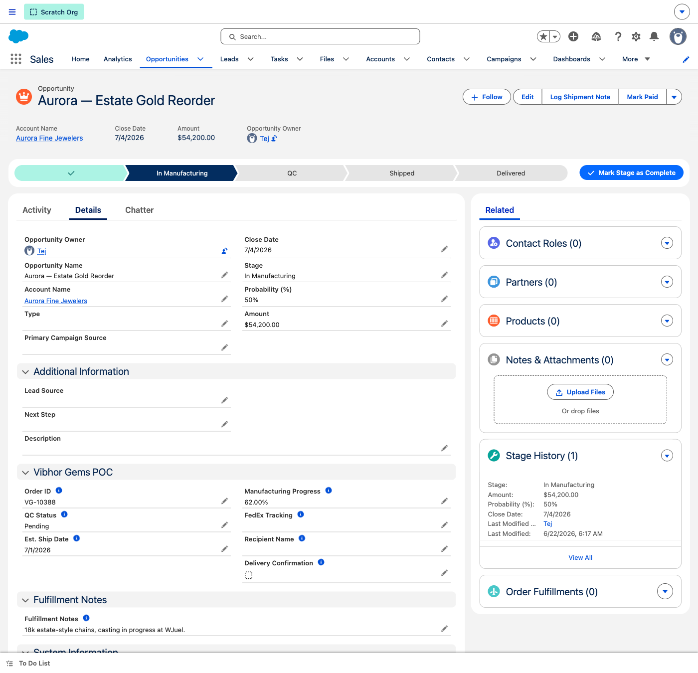
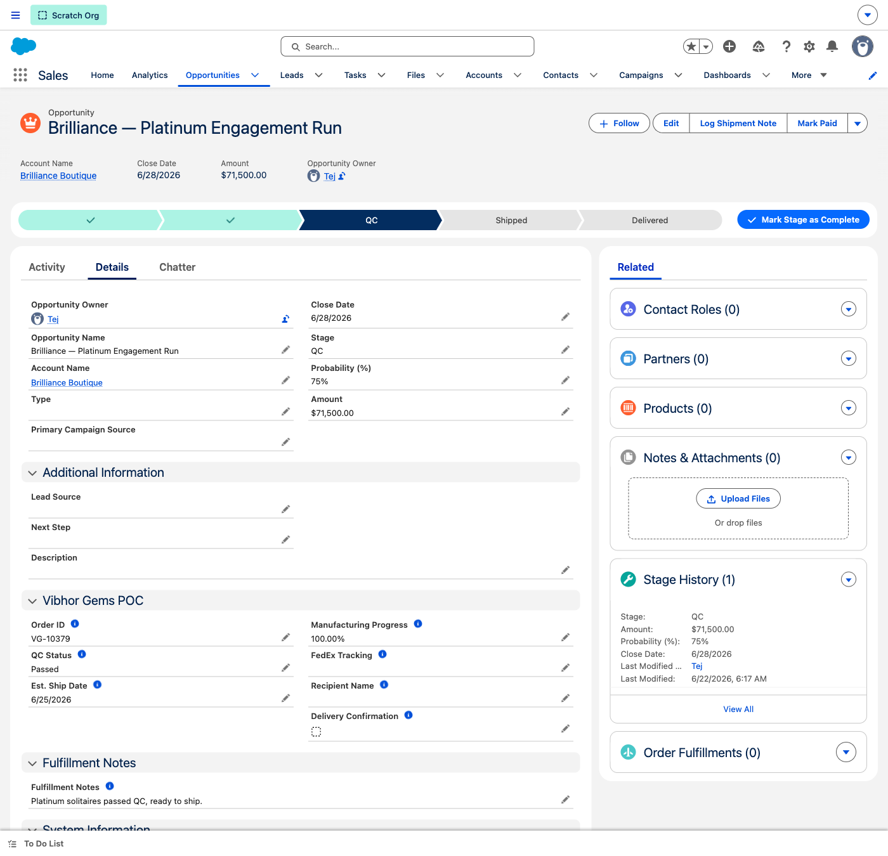
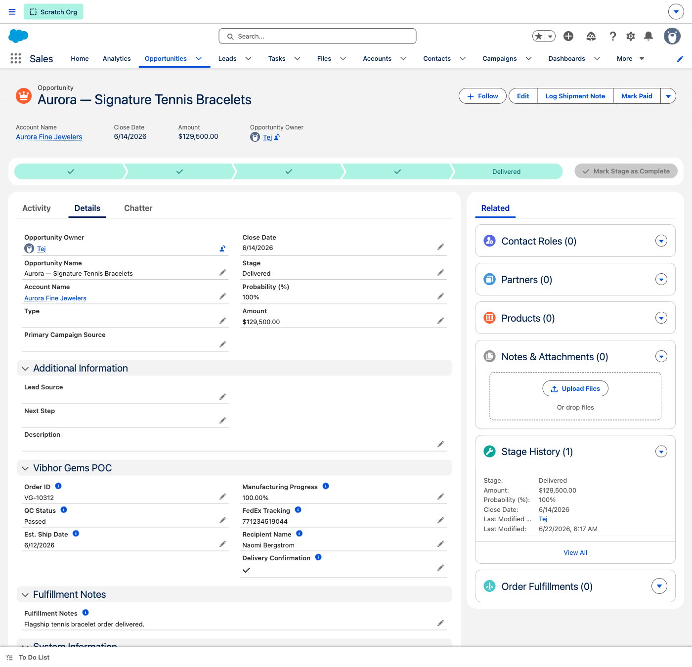
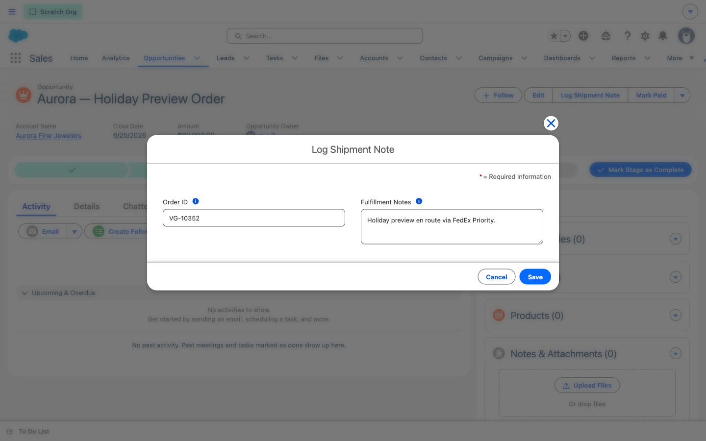
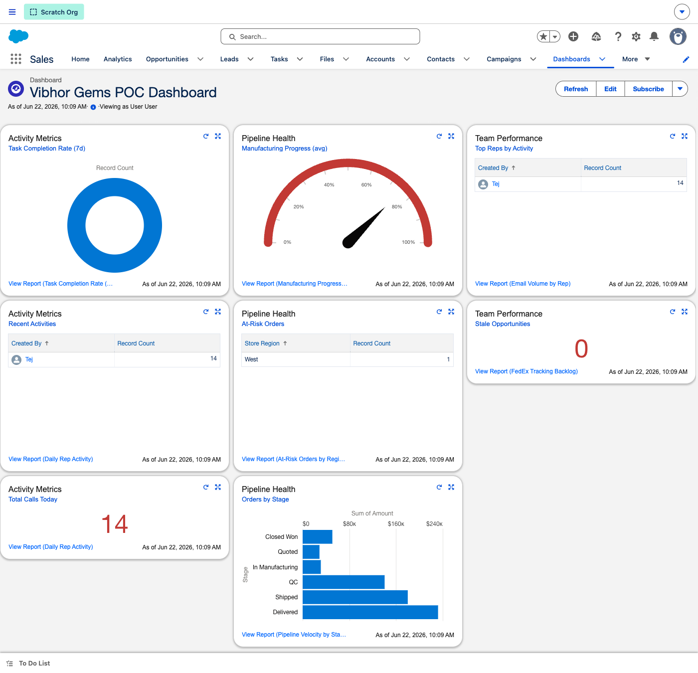

WHY THIS DEMO LANDS
Vibhor Gems runs B2B wholesale jewelry across seven disconnected systems — WJuel ERP, Shopify, FedEx, a workflow tool, a proposal generator, and Excel for pricing & targets. Orders, customer touchpoints, and fulfillment status live in different places, and a remote sales team has no single source of truth.
This POC consolidates the customer relationship and the order-to-delivery lifecycle into one Salesforce pane: every retail-store account, every order moving Quoted → In Manufacturing → QC → Shipped → Delivered, with automation stamping status and flagging risk along the way. The demo follows one flagship customer — Aurora Fine Jewelers — through that journey.
BEFORE YOU START
5-minute preflight checklist
- Log in 2 minutes before the call — Lightning's first paint is slow on a cold cache
- Pin these tabs in order:
Accounts, Opportunities, Dashboards
- Confirm the demo records load by quick-searching:
Aurora Fine Jewelers, Aurora — Holiday Preview Order, Brilliance — Platinum Engagement Run
- Open the Vibhor Gems POC Dashboard once and click Refresh — components cache for 60 minutes
- Have this guide on your second monitor — every screenshot is what you should see in the org
- Have the enablement deck on the prospect-facing screen for the framing slides
- Step 8 exercises the Log Shipment Note quick action live — you'll edit the order's FedEx tracking in front of them
★
Get Your Bearings — Anatomy of an Order ORIENTATION
New to this org, or want to orient the prospect first? Tap each numbered marker on the Opportunity below to learn what every part of the order page does — then walk the 9 steps.
TAP THE NUMBERS
Opportunity: Aurora — Holiday Preview Order — tap a marker to learn the page
Tap a blue number on the screenshot to learn that part of the order.
1
Customer Hub — High-Value Accounts at a Glance TIER 1
Open on the problem Vibhor named first: no single view of which stores matter most. Here every retail jewelry store is one Account, ranked by what they actually buy.
CLICK PATH
Accounts tab → List View picker → High-Value Accounts
WHAT TO SAY
Today your store relationships live across Shopify, the ERP, and a spreadsheet. Here, every retail store is a single Account, and this preconfigured "High-Value Accounts" view ranks them by Annual Order Value — so your team instantly sees that Heritage Gold Traders and Aurora Fine Jewelers are your biggest relationships, what region they're in, and how many orders they've placed. No spreadsheet, no system-hopping.
WHAT TO POINT OUT
- Store Region, Order Count, Annual Order Value — these are custom Vibhor Gems fields, surfaced right in the list, no clicking in
- Filtered automatically — the list shows only accounts above the high-value threshold; reps don't build filters
- There's a companion Low-Touch Accounts view that surfaces stores you haven't contacted in 30+ days — the "Josh hasn't called in 3 months" gap, solved

High-Value Accounts — ranked by Annual Order Value
2
Account 360 — Aurora Fine Jewelers TIER 1
Click into the flagship store. Everything about the relationship — people, orders, every touchpoint — on one screen.
CLICK PATH
From the list → click Aurora Fine Jewelers → review Related, then the Details tab
WHAT TO SAY
This is the single customer record your remote team has been missing. On the left, the buyers at the store — Naomi the owner, Daniel the head buyer. Below that, every order Aurora has placed, with its live stage. On the right, the activity timeline — every call, email, and task. And notice this task at the top: the moment Aurora was created, Salesforce automatically generated an "Initial Outreach" follow-up task. Your reps never start from a blank queue.
WHAT TO POINT OUT
- Contacts & Opportunities related lists — the people and the orders, both attached to the store
- Activity timeline — auto-logged calls/emails/tasks; the auto-created follow-up task is the Auto-Create Task on New Account flow firing
- On the Details tab: Store Region, Annual Order Value, Order Count, Last Interaction Date, Contact Frequency — the relationship scorecard, kept current by automation

Aurora Fine Jewelers — contacts, orders, activity

Details — Vibhor Gems relationship fields
If the custom fields look empty — scroll the Details tab down to the "Vibhor Gems POC" section; it sits below the standard fields.
3
The Order Pipeline — Every Deal in One View TIER 1
This is the screen that replaces the workflow tool plus the ERP status check plus the spreadsheet. Every order, every stage, one list.
CLICK PATH
Opportunities tab → List View Opportunity Pipeline
WHAT TO SAY
Every wholesale order across all your stores, in one place — with the amount, the close date, and exactly where it is in the build-and-ship lifecycle. Quoted, In Manufacturing, QC, Shipped, Delivered. A manager can scan this in five seconds and know the state of the whole book. There are also focused views — This Quarter Pipeline, At-Risk Orders, Ready to Ship — one click away.
WHAT TO POINT OUT
- Stage column — the five custom lifecycle stages, mirroring how an order actually moves through WJuel and FedEx
- Amount & Close Date — pipeline value and timing without opening a record
- Switch to Ready to Ship or At-Risk Orders to show the team can triage by exception, not by reading every row

Opportunity Pipeline — all orders across the lifecycle
4
Lifecycle Stage 1 — Quoted THE PATH
Open one order and follow it down the path. It starts at Quoted — the deal exists, the items are specced, nothing's in the factory yet.
CLICK PATH
Opportunities → open Aurora — Spring Diamond Collection
WHAT TO SAY
Here's the Sales Path at the top of every order — this is the order's whole life, left to right. We're at "Quoted": the buyer has the quote, the order items are described, but manufacturing hasn't started. The fulfillment fields below — manufacturing progress, FedEx tracking — are intentionally empty. They fill in as the order moves. The path replaces "let me check the workflow tool" with a glance.
WHAT TO POINT OUT
- The Sales Path component — Quoted → In Manufacturing → QC → Shipped → Delivered, guiding the rep at every step
- Order ID, Amount, Order Item Description — the quote essentials captured up front
- Fulfillment fields are blank by design — they're "pre-staged" to receive WJuel ERP data in Phase 2

Aurora — Spring Diamond Collection · Stage: Quoted
5
Lifecycle Stage 2 — In Manufacturing THE PATH
Same path, further along. Now the order is being made — and the record shows exactly how far.
CLICK PATH
Opportunities → open Aurora — Estate Gold Reorder
WHAT TO SAY
This order is in the factory. The path has advanced to "In Manufacturing," and now you can see Manufacturing Progress at 62% and an Estimated Ship Date. Today, getting this number means someone logs into WJuel and reads it off; here it lives on the order, next to the customer, the amount, and the activity history. In Phase 2 this field updates straight from the ERP — the structure is already in place.
WHAT TO POINT OUT
- Manufacturing Progress (%) — the build status, on the deal record
- Est. Ship Date — set during manufacturing so the customer can be told when to expect it
- The path moved one stage right — no status meeting, no spreadsheet update

Aurora — Estate Gold Reorder · Manufacturing Progress 62%
6
Lifecycle Stage 3 — Quality Control THE PATH
The gate before shipping. QC status is tracked on the order — and entering QC fires an automation so nothing waits silently.
CLICK PATH
Opportunities → open Brilliance — Platinum Engagement Run
WHAT TO SAY
Quality control is where jewelry orders get held or sent back, so it's its own stage. This order's QC Status is "Passed" — it's cleared to ship. And here's the automation: the moment any order enters QC, Salesforce fires the Email on QC Stage Entry flow — the responsible person gets notified with the order and ship date, so QC never becomes a silent bottleneck. You'll also see a "Blocked" example in the pipeline — that's an order flagged for rework.
WHAT TO POINT OUT
- QC Status — Pending / In Progress / Blocked / Passed, right on the record
- Email on QC Stage Entry flow — automatic alert when an order reaches QC; no one has to remember to check
- Orders with QC Status = Passed flow into the Ready to Ship list view (Step 8's queue)

Brilliance — Platinum Engagement Run · QC Status: Passed
7
Lifecycle Stages 4 & 5 — Shipped & Delivered THE PATH
The finish line. FedEx tracking is captured on the order, and delivery is confirmed and signed for — closing the loop the spreadsheet never could.
CLICK PATH
Open Aurora — Holiday Preview Order (Shipped), then Aurora — Signature Tennis Bracelets (Delivered)
WHAT TO SAY
When an order ships, the FedEx tracking number lives right here on the record — no more copy-pasting it between FedEx and the ERP. And when it's delivered, the order captures the delivery confirmation and who signed for it. The path is fully lit up, Quoted through Delivered. Delivered orders count as Closed Won, so the moment a package lands, your revenue numbers are current.
WHAT TO POINT OUT
- FedEx Tracking on the Shipped order — one field, one source of truth; the Log Fulfillment on Tracking Update flow stamps the record when it's entered
- Delivery Confirmation & Recipient Name on the Delivered order — the loop is closed and audited
- Delivered = Closed Won — fulfillment and revenue reporting are the same number, automatically
Holiday Preview Order · Shipped · FedEx 771234567890

Signature Tennis Bracelets · Delivered & confirmed
8
Log Shipment Note — Live Quick Action LIVE
Do this one live. One button, two fields, no edit-the-whole-record. This is the everyday rep workflow.
CLICK PATH
On any order → click Log Shipment Note (page header) → enter tracking / notes → Save
WHAT TO SAY
When the order ships, a rep doesn't go hunting through fields. One click on "Log Shipment Note," drop in the FedEx tracking and a quick note, Save — done. There's a matching "Mark Paid" action for the finance side. These quick actions are how a rep updates the order in five seconds while they're on the phone with the store — exactly the "shifting through three systems" problem Vibhor described, gone.
WHAT TO POINT OUT
- Focused action — only the fields that matter for this task, not the whole record
- Order ID & Fulfillment Notes captured in-context — the rep never leaves the order
- Pair it with Mark Paid in the header to show the same speed for collections

Log Shipment Note — quick action editing the order in place
If you actually save a change — that's fine, it's demo data. To reset, reopen the action and restore the original tracking number, or just leave it.
9
Command Center — The POC Dashboard CLOSE
Close on the manager's view. Everything you just walked — orders by stage, manufacturing health, activity, at-risk — rolled up live.
CLICK PATH
Dashboards tab → open Vibhor Gems POC Dashboard → click Refresh
WHAT TO SAY
This is the one screen Vibhor asked for — "the full pipeline in one dashboard." Orders by Stage shows the whole book by lifecycle. The Manufacturing Progress gauge shows average build status across open orders. Task Completion and Total Calls show the remote team is actually working the accounts. At-Risk Orders surfaces anything slipping. Every tile is live against the same records we just walked — one source of truth, no data entry duplication.
WHAT TO POINT OUT
- Orders by Stage — pipeline value across Quoted → Delivered, the order book at a glance
- Manufacturing Progress gauge & At-Risk Orders — operational health, not just sales numbers
- Total Calls Today / Task Completion / Top Reps — the remote-team visibility Vibhor wanted, without touching anyone's phone or inbox
- Click any component to drill into the underlying report — eight reports back this dashboard

Vibhor Gems POC Dashboard — live order, activity & risk metrics
If a tile shows "No data" — click the dashboard Refresh button (top right); components cache for 60 minutes and re-run their reports live.
⚙
The Automation Working Behind the Scenes REFERENCE
If the prospect asks "what's actually automated?" — here are the seven flows live in this org.
On new account
Auto-Create Task on New Account
Every new store gets an Initial Outreach follow-up task — no blank queues.
On QC entry
Email on QC Stage Entry
Notifies the owner the moment an order enters Quality Control.
On tracking update
Log Fulfillment on Tracking Update
Stamps fulfillment status when a FedEx tracking number is added.
On order change
Maintain Order Count on Account
Keeps each store's Order Count current as orders are created.
On ERP sync
Update Opp on Order Fulfillment Sync
Pre-staged to apply WJuel ERP fulfillment data to the order (Phase 2).
Scheduled · weekly
Weekly Activity Summary (Mon 8 AM)
Emails the team a digest of the week's logged activity.
Scheduled · monthly
Monthly Stale Opportunity Cleanup
Sweeps orders with no movement so nothing rots in the pipeline.
Guided UI
Sales Path + Quick Actions
Quoted→Delivered path, plus Log Shipment Note & Mark Paid actions.
QUICK REFERENCE — STEP TO RECORD
Demo records at a glance
STEP 1 & 2 — HERO ACCOUNT
Aurora Fine Jewelers — Northeast
Annual Order Value $185,000 · 4 orders
STEP 3 — PIPELINE VIEW
Opportunities → Opportunity Pipeline
16 orders across all 5 stages
STEP 4 — QUOTED
Aurora — Spring Diamond Collection
$48,500 · Order VG-10421
STEP 5 — IN MANUFACTURING
Aurora — Estate Gold Reorder
62% built · Order VG-10388
STEP 6 — QUALITY CONTROL
Brilliance — Platinum Engagement Run
QC Status: Passed
STEP 7 — SHIPPED & DELIVERED
Aurora — Holiday Preview Order (Shipped)
Aurora — Signature Tennis Bracelets (Delivered)
STEP 8 — LIVE ACTION
Any order → Log Shipment Note
FedEx tracking + fulfillment note
STEP 9 — DASHBOARD
Vibhor Gems POC Dashboard
Refresh first · 8 components
APPENDIX
Handling Tough Questions
"How does data actually get from WJuel and Shopify into Salesforce?"
That's Phase 2 — and the POC is built to receive it. The order's fulfillment fields (Order ID, Manufacturing Progress, FedEx Tracking, Est. Ship Date) are pre-staged and field-mapped, and the Update Opp on Order Fulfillment Sync flow already exists. In Phase 2 we connect WJuel (and Shopify for order creation) via an integration user or middleware so those fields update automatically. Today we're proving the model with the same fields populated manually.
"Our team is remote — how do I see who's actually working?"
That's exactly what the dashboard's activity tiles are for — Total Calls Today, Task Completion Rate, Top Reps by Activity. Every call, email, and task a rep logs rolls up here, and each account shows a Last Interaction Date and an Activity Count. You get visibility without touching anyone's phone, Slack, or inbox — the "Josh hasn't called in three months" gap, closed.
"We sell on Shopify — do orders have to be re-entered here?"
Not long-term. In Phase 2, Shopify orders create the Opportunity automatically. For the POC we're demonstrating the lifecycle and the single-pane visibility; the order-creation integration is a defined, scoped follow-on, not a rebuild.
"Can the order page show even more — manufacturing photos, documents?"
Yes. The order record already has Notes & Attachments and Files; reps can drop QC photos or specs straight onto the order. Richer layouts (a custom Lightning page with the path, fulfillment widget, and files side by side) are a quick Phase-2 enhancement — the data and automation are all in place.
"What happens when an order stalls? Does anything chase it?"
Two automations cover that. Entering QC fires an email alert so nothing sits silently, and the scheduled Monthly Stale Opportunity Cleanup flow sweeps orders that haven't moved. There are also At-Risk Orders and Stale Opportunities list views and a dashboard tile, so a manager can triage by exception.
"How do we add the rest of the team? Right now it's one login."
The POC runs on a single System Administrator for speed. Going live, we add each rep as a user, scope their access with a permission set, and they immediately get the accounts, orders, path, and dashboard. The data model and automation don't change — only who can see it.
"Can the dashboard slice the data more ways?"
Easily — all eight tiles render live today (activity metrics, manufacturing progress, pipeline by stage, at-risk orders, team performance). Each is backed by a standard report you can re-group, filter, or chart differently in minutes, and you can add tiles for anything in the data model without code.
"Is this real data or a canned demo?"
It's a seeded demo dataset in your real trial org — eight retail-store accounts, sixteen orders spread across every lifecycle stage, contacts, and logged activities — so every screen reflects how the org behaves with live records. You can edit, advance stages, and watch the automation fire in real time.